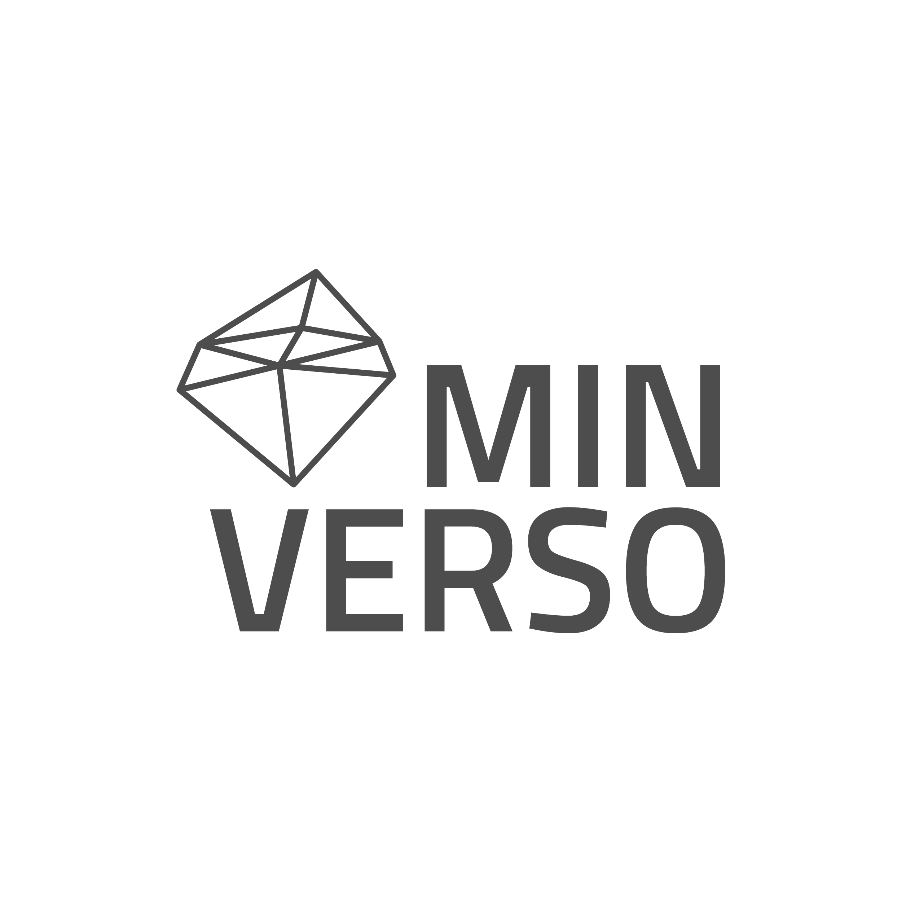

BIENVENIDO AL CURSO
DE BLOQUEO LOTO
Aislamiento Seguro de Energía
En esta simulación aprenderás a desenergizar y bloquear equipos de forma segura
para evitar accidentes durante el mantenimiento.
Este módulo se divide en 5 pasos operativos.